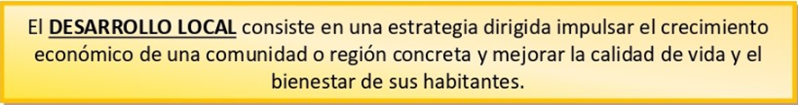

El proceso de globalización ha permitido que podamos comprar prácticamente cualquier producto de cualquier país del mundo. Tan solo accediendo a internet, seleccionando lo que queremos y en cuestión de uno o pocos días tenemos algo que ha sido producido a cientos de kilómetros de distancia.
La globalización tiene muchas ventajas, pero también efectos adversos. En algunas localidades los negocios están cerrando, por lo que el empleo está siendo dañado. El motivo es que no pueden competir con las multinacionales, ya que tienen capacidad para vender y enviar sus productos a cualquier parte del planeta.
Así que, se están comenzando a llevar a cabo estrategias de desarrollo local con el objetivo de proteger las economías locales.

Entre dichas estrategias, podemos destacar.
1. Crear empresas. Es esencial para el desarrollo local implementar medidas que faciliten la creación empresas o que ayuden a las que ya están creadas. Las subvenciones, la formación para el emprendimiento o los préstamos con interés reducidos pueden contribuir a la creación de empleos y fomentar el crecimiento económico local.
2. Invertir en infraestructuras. Las carreteras, el ferrocarril, los aeropuertos, los puertos y las TIC son también muy relevantes para el desarrollo de la economía local. El incremento del gasto mejora el vínculo entre las empresas y las personas, atrayendo a su vez otras inversiones y empresas. Además, mejora la calidad de vida de los ciudadanos.
3. Invertir en educación y en formación para los trabajadores. Ambas son fundamentales para incrementar la productividad de los RR.HH. El gasto en alguna de ellas, o en las dos, posibilita que los trabajadores se vuelvan más competentes, lo que también atrae otras empresas y fomenta el crecimiento económico local.
4. Estimular la innovación y la tecnología. Pueden crear productos nuevos y mejorar la producción de las empresas locales para poder competir con empresas de mayor tamaño. Algunas medidas son las ayudas al I+D de las empresas, la fundación de parques tecnológicos y la colaboración de empresas y universidades.
5. Desarrollo del turismo, que puede ser una fuente de ingresos relevante para la comunidad local. La creación de infraestructuras turísticas o promoción de eventos culturales y deportivos son algunos de los instrumentos que se pueden emplear.